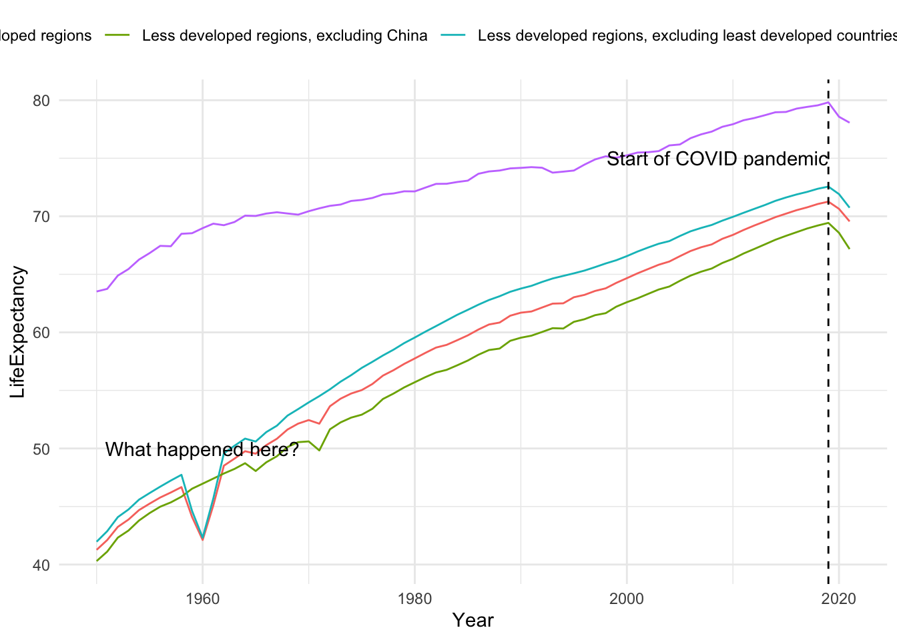

regions <- life_expectancy %>%filter(str_detect(Entity, "region"))regions %>%ggplot(aes(x = Year, y = LifeExpectancy)) +geom_line(aes(col = Entity)) +theme(legend.position ="top") +annotate(geom ="text",x =1960, y =50,label ="What happened here?") +geom_vline(xintercept =2019, linetype =2) +annotate(geom ="text", x =2019, y =75,label ="Start of COVID pandemic",hjust =1)

Difference in life expectancy between more and less developed regions
Code
regions %>%filter(Entity %in%c("More developed regions","Less developed regions")) %>%arrange(Year, Entity) %>%group_by(Year) %>%mutate(difference = LifeExpectancy -lag(LifeExpectancy)) %>%filter(!is.na(difference)) %>%ungroup() %>%ggplot(aes(x = Year, y = difference)) +geom_area(alpha =0.5) +expand_limits(y =0) +labs(title ="Difference in life expectancy between more developed and less developed regions",y ="Difference in life expectancy (years)")
We look at life expectancy at different ages in three specific countries.
Sandra Nwobi, who suggested the three countries above, provides the following summary:
Of the three developing countries—Iran, South Africa, and Nigeria—Nigeria has a significantly higher zero-age death rate in the late 50s and early 60s. This can be attributed to a number of factors, including socioeconomic instability, political unrest, malnutrition, and limited access to healthcare. Comparing this result to South Africa and Iran, it is comparatively higher. However, there have been noticeable improvements in Nigeria during the 1980s, with a steady increase. Nevertheless, much work needs to be done to combat this in Nigeria, as it performs significantly worse than the other two countries.
There was a noticeable decline in data in the early 2000s, particularly in South Africa. Health crises like HIV/AIDS, which may have affected people between the ages of 0 and 25, as well as a number of social and economic problems may have contributed to this decline.
Iran’s data indicates consistent growth across all age groups over the years, with the exception of a general decline in 2020 that was likely caused by the COVID-19 virus. Out of the three countries, South Africa is the most affected, maybe as a result of a much older demography compared to Nigeria.